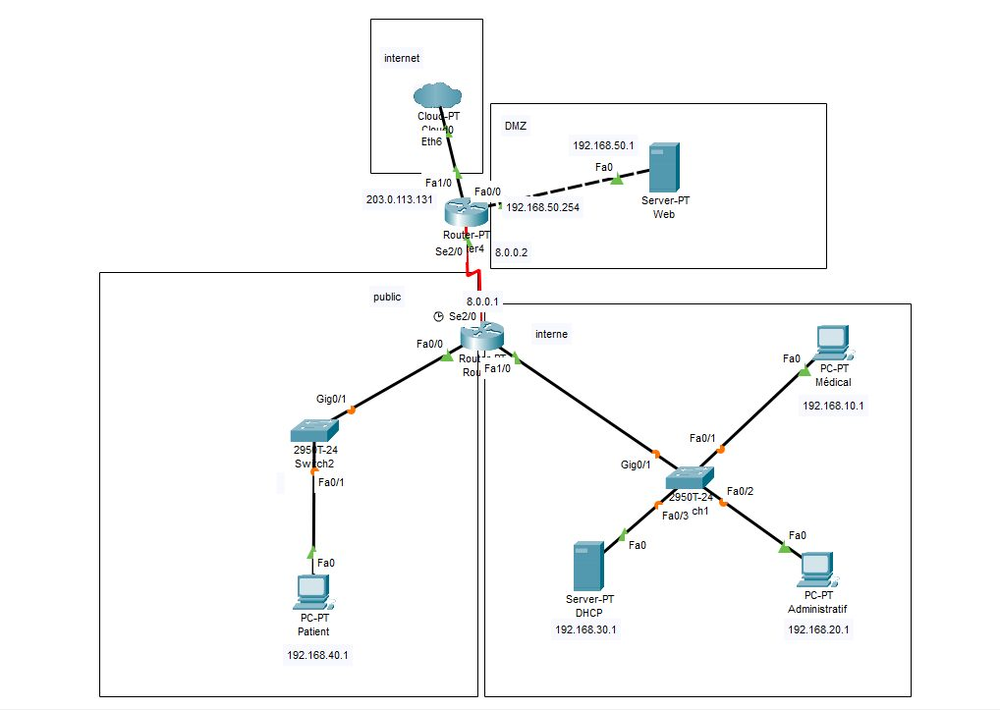
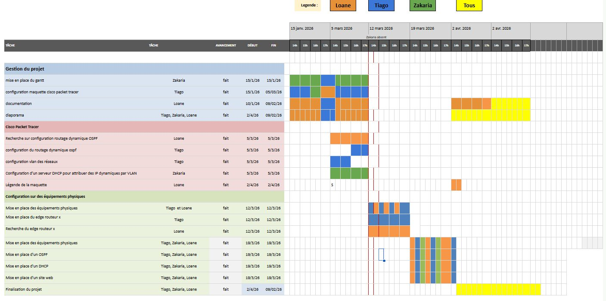
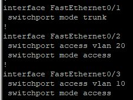
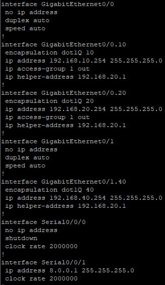
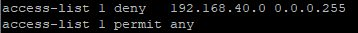
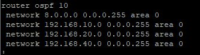
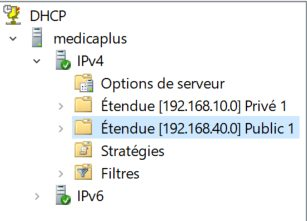
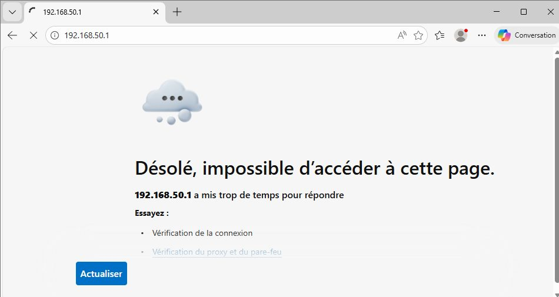
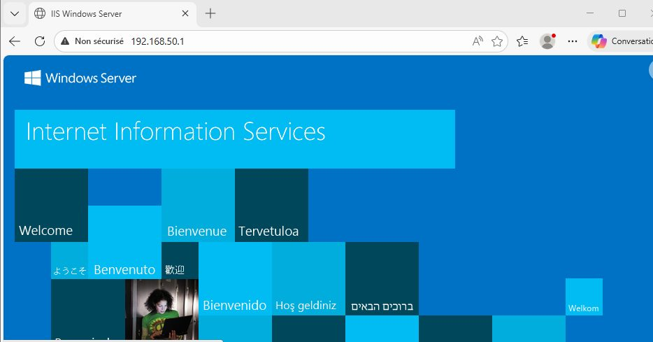
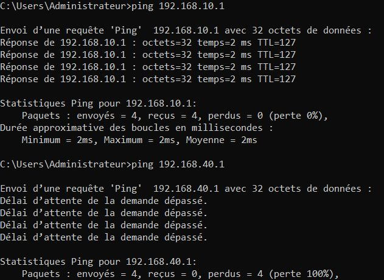

Contexte
La clinique MedicaPlus veut moderniser son système d'information. Les données médicales sont sensibles, et plusieurs populations partagent le même réseau : personnel médical, personnel administratif, patients et serveurs.
Le cahier des charges impose :
- des VLAN séparés pour le personnel médical, l'administratif, les patients et les serveurs ;
- un accès Internet seul pour les patients, via un VLAN WiFi dédié, sans accès aux VLAN internes ;
- l'administratif sans accès aux dossiers médicaux ; le médical avec accès aux serveurs internes ;
- un serveur web en DMZ, accessible depuis Internet et certains VLAN autorisés ;
- aucun flux non autorisé de la DMZ vers le LAN.
Organisation et planification
Nous avons construit un diagramme de Gantt pour découper le projet en phases et nous répartir le travail à trois. Le document technique renvoie vers ce Gantt et présente la répartition des tâches.
Ma contribution personnelle
D'après la répartition du Gantt (voir la preuve « Gantt » plus bas), les tâches qui m'étaient attribuées sont :
- Maquette Cisco Packet Tracer — configuration de la maquette du réseau (15/01 – 05/03/2026) ;
- VLAN — configuration des VLAN des différents réseaux (05/03/2026) ;
- Routage dynamique OSPF — configuration d'OSPF entre les deux routeurs (05/03/2026) ;
- Edge routeur — mise en place du routeur de bordure sur les équipements physiques (12/03/2026), et installation des équipements physiques avec une coéquipière.
Les tâches finales (OSPF, DHCP et site web sur les équipements physiques le 19/03, diaporama et finalisation) ont été faites à trois. La recherche sur OSPF, la documentation et le DHCP étaient pris en charge par mes coéquipiers.
Réalisation
Matériel
| Équipement | Rôle |
|---|---|
| 2 routeurs Cisco | Routeur du réseau interne et routeur de la DMZ |
| 2 switchs Cisco | Switch du réseau privé et switch du réseau public |
| Windows Server 2019 | Serveur DHCP |
| Serveur web | Site de la clinique, hébergé en DMZ |
| Postes clients | Au moins un par VLAN, pour les tests |
Commutation
- Switch privé —
fa0/1en trunk vers le routeur ;fa0/2etfa0/3en access dans leur VLAN. - Switch public —
fa0/1en trunk vers le routeur ;fa0/3en access dans son VLAN.
Routage
- Sous-interfaces — une interface virtuelle par VLAN sur le routeur interne (VLAN 10, 20 et 30 sur
gig0/0, VLAN 40 surgig0/1), et une liaison sériese0/0/1vers le routeur de la DMZ. - DMZ — sur le routeur DMZ,
gig0/1est la passerelle du serveur web (192.168.50.254). - Routes statiques puis OSPF — deux routes statiques ont d'abord servi à tester le réseau, puis nous sommes passés au routage dynamique OSPF entre les deux routeurs, pour que le réseau puisse évoluer (nouveau bâtiment, extension du réseau patients).
Services
- DHCP — installé sur le réseau 192.168.20.0, il distribue les adresses des réseaux 192.168.10.0 et 192.168.40.0 avec des plages distinctes.
- Serveur web — Microsoft IIS, sur un serveur Windows contrôleur de domaine.
Habilitations : VLAN et ACL
La segmentation en VLAN sépare les populations ; les ACL sur les routeurs décident ensuite quels flux sont autorisés entre elles. L'ACL 1, appliquée notamment sur l'interface de la DMZ, filtre les échanges entre le réseau public, les réseaux internes et le serveur web.
Pour vérifier ces habilitations, nous avons placé un client dans le réseau public (192.168.40.0) et un client dans le réseau interne (192.168.10.0), puis testé chaque cas :
| Test | Attendu | Résultat |
|---|---|---|
| Client public → réseaux internes (ping) | Bloqué | Bloqué par l'ACL 1 |
| Client public → site du serveur web | Bloqué (cahier des charges) | Bloqué par l'ACL 1 |
| Client interne → site du serveur web | Autorisé | Page affichée |
| Client interne → autres réseaux internes | Autorisé | Communication établie |
| Serveur web → réseaux internes / réseau externe | Interne seulement | Externe bloqué par l'ACL 1 |
| DHCP → clients interne et public | Adresses attribuées | Adresses reçues ; le réseau public n'est pas joignable par ping, à cause de l'ACL 1 |
Difficultés et solutions
- Pings bloqués par les pare-feux Windows — les premiers tests échouaient alors que la configuration réseau était correcte. Le pare-feu des postes et du serveur DHCP bloquait les échanges ; nous l'avons désactivé pour les tests. Avec le recul, il suffirait d'autoriser uniquement l'ICMP plutôt que de couper tout le pare-feu.
- Valider avant d'automatiser — les routes statiques nous ont permis de valider la connectivité avant de passer à OSPF, ce qui a simplifié le diagnostic.
Compétences mobilisées (bloc 1, épreuve E5)
Ces compétences sont reportées dans mon tableau de synthèse E5.
Preuves









